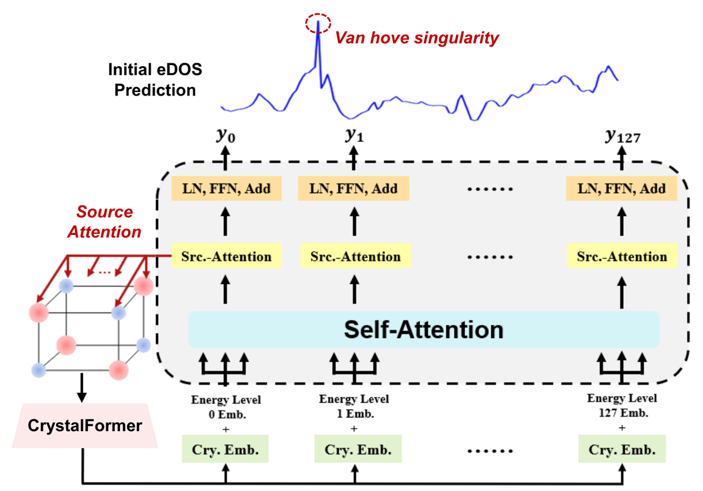
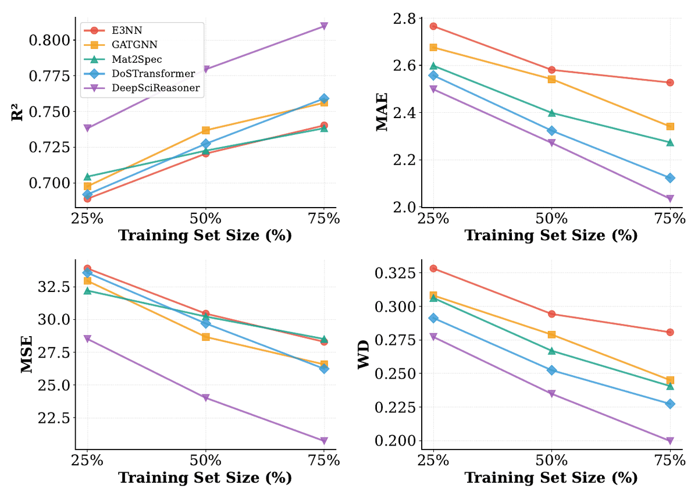
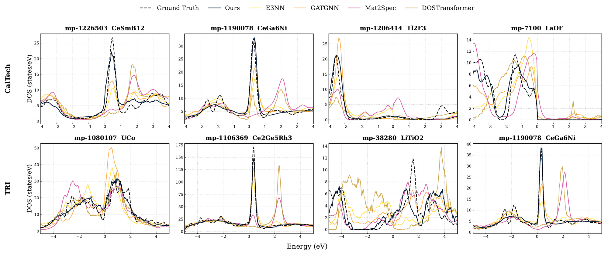
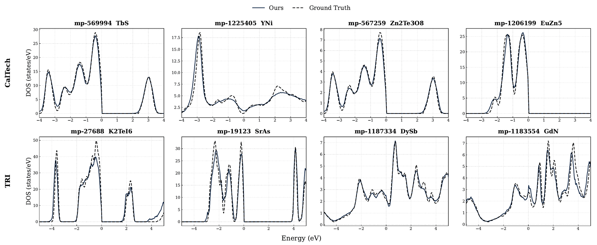

ICML 2026
Structured scientific spectra encode rich physical information while obeying hard constraints, such as conservation laws and characteristic spectral geometry. Accurate prediction of these spectra is central to materials discovery, yet existing methods often treat them as unconstrained sequences and therefore fail to enforce the underlying physical structure. Taking electronic density of states (eDOS) as the prototypical example, we introduce DeepSciReasoner, a general paradigm for predicting scientific spectra under physical constraints. The framework combines structure-aware spectrum decoding with constraint-preserving physical reasoning, allowing predictions to capture rich spectral structure while respecting the underlying physics. We evaluate DeepSciReasoner on eDOS, phonon density of states (phDOS), X-ray absorption near-edge structure (XANES), and Raman spectra, where it substantially improves prediction accuracy while maintaining physical consistency. These results establish DeepSciReasoner as a reusable blueprint for structured scientific spectrum prediction under hard physical constraints.
Machine learning has made rapid progress on scalar crystal properties, but a spectrum is a high-dimensional output over a spectral axis (energy, frequency or wavenumber) whose validity depends on physics. Viewed as a density \(D(E) \ge 0\) on \([a,b]\), with normalized form \(p(E) = D(E) / \int_a^b D(u)\,du\), a valid prediction must be nonnegative and conserve its total mass:
\[ \begin{gathered} p(E) \ge 0 \;\;\text{for all } E \in [a,b], \qquad \int_a^b p(E)\,dE = 1, \\ \text{for eDOS equivalently } \int_a^b D(E)\,dE = N_{\mathrm{states}}. \end{gathered} \]It must also place that mass correctly: sharp band edges and gaps, and Van Hove singularities in the eDOS, and their analogues in other spectra, such as the white line in XANES and sparse vibrational peaks in Raman and phDOS. Prior eDOS predictors fall short in three ways that recur across structured spectra:
The band gap and the spectrum are predicted separately and reconciled post hoc, which misaligns band edges near the Fermi level and introduces spurious in-gap density.
A pointwise regression loss can be low while peaks shift, Van Hove singularities blur, or the total drifts: spectra that look plausible but are physically inconsistent.
The total eDOS is a sum of atom-projected DOS (pDOS), yet prior models collapse the crystal into a single global embedding before decoding.
Our approach. Treat each spectrum as an unnormalized density: decode it with structure-aware atom-to-spectral-axis attention, then refine it by mass-conserving transport, so that spectral geometry is sharpened without breaking conservation. The same recipe transfers from eDOS to phDOS, XANES and Raman without architectural changes.
A crystal \(c\) is a graph of atoms with interatomic edges (each atom keeps at most \(n_{\max}\) neighbors), and the target is a spectrum \(y \in \mathbb{R}^{l_y}\) on a fixed grid of \(l_y\) spectral bins. The formulation is generic: the only target-specific choices are the spectral axis, its discretization, and optional conditioning (for XANES, the absorbing element). We describe it with eDOS as the running example.
Edge-aware crystal graph Transformer. Each layer attends over an atom's neighbors with keys and values modulated by the edge embedding \(g_{ij}\) of the interatomic distance, followed by a gated residual connection:
\[ \begin{gathered} \alpha_{ij} = \operatorname{softmax}_{j \in \mathcal{N}(i)}\!\Big(\frac{q_i^\top (k_j + g_{ij})}{\sqrt{d}}\Big), \\ \hat h_i = \textstyle\sum_{j \in \mathcal{N}(i)} \alpha_{ij}\, (v_j + g_{ij}). \end{gathered} \]Spectrum decoding with source attention. Instead of decoding a single pooled embedding with an MLP, a Transformer decoder holds one query per spectral bin, initialized from the bin's index embedding and the global crystal embedding. Self-attention across bins models correlations along the spectral axis, and source attention from each bin to the atom embeddings lets every bin aggregate the atoms that contribute at that energy, mirroring the decomposition of the eDOS into atom-projected contributions. A Softplus head keeps the output nonnegative.

Stage I is trained with a shape-and-mass objective. With \(\tilde y\) and \(\tilde{\hat y}\) the sum-normalized target and prediction, a KL divergence supervises where spectral mass lies, and a second term supervises the predicted total \(\hat Z = \sum_i \hat y_i\):
\[ \mathcal{L} = D_{\mathrm{KL}}\big(\tilde y \,\|\, \tilde{\hat y}\big) + \lambda \,\big\|\hat Z - Z\big\|_2^2 . \]For eDOS and phDOS the total (the number of states or modes) has an analytic form and can be supplied directly; for XANES and Raman it is learned through this term.
The Stage I prediction can still blur band edges, leave noise in the gap, or misplace mass. Stage II corrects it directly in probability space. The normalized prediction \(p_0\) is evolved toward the target \(p_T\) by pure transport along the spectral axis, governed by the continuity equation with a learned velocity field \(f_\theta\):
\[ \begin{gathered} \partial_t p(x,t) + \partial_x \big(p(x,t)\, f_\theta(x,t)\big) = 0, \\ \frac{d}{dt}\int_a^b p(x,t)\,dx = -\big[\,p f_\theta\,\big]_a^b = 0 . \end{gathered} \]With no flux through the boundaries, mass can move but can never be created or destroyed. As a physically principled reference flow, we use the 2-Wasserstein displacement interpolation between \(p_0\) and \(p_T\). In one dimension it moves every quantile \(s\) on a straight line at constant speed:
\[ \begin{gathered} x_t(s) = (1-t)\,F_0^{-1}(s) + t\,F_T^{-1}(s), \\ f_t\big(x_t(s)\big) = F_T^{-1}(s) - F_0^{-1}(s), \end{gathered} \]where \(F_0\) and \(F_T\) are the CDFs of \(p_0\) and \(p_T\). This pair exactly satisfies the continuity equation.
Training (simulation-free). Regress the velocity network onto the reference field:
\[ \mathcal{L}(\theta) = \mathbb{E}_{(x,t)}\, \big\| f_\theta(x,t; C) - f_t(x) \big\|^2 . \]There is no differentiation through the optimal-transport construction or the PDE solver. Conditioning on the crystal embedding \(C\) amortizes one velocity network across all crystals.
Inference (CDF upwind scheme). Transport the CDF \(F\) instead of the density, with forward Euler in time and a first-order upwind difference in space:
\[ F_i^{k+1} = F_i^{k} - \Delta t\, f_\theta(x_i, t_k)\, D_x^{\mathrm{up}} F_i^{k} . \]The density is recovered by finite differences. The monotone scheme keeps the CDF ordered, so the refined spectrum stays nonnegative and conserves its mass.
Inference pipeline (Algorithm 1 in the paper)
function INFER(G):
{h_i}, h_x ← Enc(G); ŷ₀ ← Dec({h_i}, h_x) # Stage I: structure-aware decoding
p ← ŷ₀ / Σ_i ŷ₀,i; F_i ← Σ_{m≤i} p_m Δx # normalize; initial CDF
for k = 0, …, N_t − 2: # Stage II: mass-conserving refinement
v_i ← f_θ(x_i, kΔt; h_x) # velocity on the spectral grid
F_i ← F_i − Δt · v_i · D_x^up F_i # upwind CDF update
p_i ← (F_i − F_{i−1}) / Δx; renormalize p # recover the density
return p # optionally rescaled by the predicted total Ẑ\(D_x^{\mathrm{up}}\) is the backward difference where \(v_i \ge 0\) and the forward difference where \(v_i < 0\), and a CFL-like condition \(\max_i |v_i|\,\Delta t / \Delta x \le 1\) keeps the CDF monotone. Derivations and proofs of the end-to-end validity guarantee are in the paper's appendix.
We compare against two families of baselines: structure encoders that map a learned crystal representation to the target (E3NN, GATGNN, CrystalFormer, and MEGNet and M3GNet on the generalization benchmarks), and crystal-to-sequence models that decode the spectrum as a sequence over its bins (Mat2Spec, DOSTransformer). Spectra are compared with the DFT ground truth by \(R^2\), MAE, MSE and Wasserstein distance (WD). Unlike prior work, the eDOS benchmarks keep the full spectrum, including the band gap between the valence-band maximum and the conduction-band minimum, which makes them more challenging.
| Method | CalTech | TRI | ||||||
|---|---|---|---|---|---|---|---|---|
| \(R^2\) ↑ | MAE ↓ | MSE ↓ | WD ↓ | \(R^2\) ↑ | MAE ↓ | MSE ↓ | WD ↓ | |
| E3NN | 0.748±0.002 | 2.421±0.003 | 27.351±0.629 | 0.261±0.005 | 0.669±0.004 | 2.945±0.005 | 36.535±0.532 | 0.445±0.004 |
| GATGNN | 0.772±0.001 | 2.272±0.016 | 24.831±0.585 | 0.230±0.004 | 0.702±0.004 | 2.724±0.004 | 33.811±0.420 | 0.370±0.003 |
| CrystalFormer | 0.765±0.006 | 2.344±0.016 | 26.138±0.477 | 0.248±0.012 | 0.695±0.010 | 2.869±0.082 | 34.584±0.581 | 0.399±0.017 |
| Mat2Spec | 0.743±0.002 | 2.226±0.010 | 27.955±0.137 | 0.228±0.013 | 0.677±0.002 | 2.719±0.072 | 36.628±0.105 | 0.395±0.009 |
| DOSTransformer | 0.771±0.002 | 2.023±0.032 | 24.675±0.354 | 0.212±0.040 | 0.716±0.003 | 2.455±0.080 | 32.208±0.288 | 0.375±0.014 |
| DeepSciReasoner | 0.815±0.007 | 1.983±0.021 | 19.612±0.225 | 0.191±0.017 | 0.761±0.009 | 2.357±0.046 | 27.162±0.563 | 0.305±0.011 |
Full-spectrum eDOS prediction (Table 1 of the paper; mean ± one standard deviation). CalTech uses 128 bins over [−4, 4] eV and TRI 256 bins over [−5, 5] eV, both derived from the Materials Project. Bold marks the best mean and underline the second best. DeepSciReasoner is best on every metric of both datasets; on CalTech it reduces MSE by 20.5% relative to the strongest baseline.
| Method | XANES-full | XANES-O | Raman | phDOS | ||||||
|---|---|---|---|---|---|---|---|---|---|---|
| \(R^2\) ↑ | WD ↓ | \(R^2\) ↑ | WD ↓ | \(R^2\) ↑ | WD ↓ | \(R^2\) ↑ | MAE ↓ | MSE ↓ | WD ↓ | |
| E3NN | 0.650±0.012 | 0.108±0.003 | 0.381±0.011 | 0.099±0.004 | 0.096±0.005 | 0.451±0.019 | 0.506±0.015 | 0.082±0.003 | 0.026±0.001 | 0.103±0.004 |
| GATGNN | 0.648±0.005 | 0.104±0.001 | 0.293±0.013 | 0.108±0.002 | 0.115±0.005 | 0.526±0.008 | 0.270±0.025 | 0.106±0.002 | 0.038±0.003 | 0.155±0.008 |
| MEGNet | 0.657±0.008 | 0.107±0.002 | 0.347±0.020 | 0.102±0.006 | 0.045±0.004 | 0.449±0.024 | 0.538±0.014 | 0.080±0.003 | 0.024±0.001 | 0.094±0.004 |
| M3GNet | 0.648±0.010 | 0.107±0.002 | 0.386±0.012 | 0.096±0.005 | 0.083±0.003 | 0.426±0.021 | 0.543±0.012 | 0.075±0.003 | 0.023±0.001 | 0.075±0.003 |
| DSR | 0.764±0.009 | 0.098±0.003 | 0.474±0.010 | 0.093±0.003 | 0.264±0.002 | 0.423±0.017 | 0.636±0.013 | 0.062±0.004 | 0.021±0.002 | 0.061±0.002 |
Generalization to other structured spectra (Table 2 of the paper; mean ± one standard deviation), with the architecture essentially unchanged. XANES-full covers K-edge spectra of all absorbing elements (the decoder is also conditioned on the absorber), and XANES-O is the oxygen K-edge subset with one spectrum per material. DSR = DeepSciReasoner. It improves XANES-full \(R^2\) from 0.657 to 0.764 and Raman \(R^2\) from 0.115 to 0.264 over the strongest baseline, and is best on all four phDOS metrics.
Whether a predicted eDOS is sharp enough to be useful shows in a practical screening task: identifying rare near-Fermi-level valence-band (VB) gaps, regions of suppressed states that are easily washed out by smoothing or regression noise. Only a small fraction of materials have them, so the task is highly imbalanced.
| Method | CalTech | TRI | ||||||
|---|---|---|---|---|---|---|---|---|
| Prec. ↑ | Recall ↑ | F1 ↑ | MCC ↑ | Prec. ↑ | Recall ↑ | F1 ↑ | MCC ↑ | |
| E3NN | 0.672±0.035 | 0.366±0.013 | 0.474±0.003 | 0.479±0.011 | 0.647±0.052 | 0.314±0.071 | 0.423±0.028 | 0.442±0.012 |
| GATGNN | 0.699±0.033 | 0.430±0.008 | 0.532±0.003 | 0.532±0.009 | 0.671±0.049 | 0.362±0.053 | 0.476±0.021 | 0.489±0.008 |
| CrystalFormer | 0.654±0.023 | 0.443±0.031 | 0.532±0.022 | 0.542±0.013 | 0.616±0.037 | 0.371±0.009 | 0.465±0.024 | 0.472±0.031 |
| Mat2Spec | 0.726±0.018 | 0.551±0.007 | 0.629±0.004 | 0.611±0.019 | 0.601±0.024 | 0.429±0.016 | 0.509±0.017 | 0.508±0.014 |
| DOSTransformer | 0.684±0.027 | 0.532±0.009 | 0.594±0.014 | 0.584±0.051 | 0.573±0.073 | 0.329±0.020 | 0.416±0.052 | 0.422±0.066 |
| DeepSciReasoner | 0.753±0.021 | 0.637±0.014 | 0.704±0.011 | 0.679±0.022 | 0.803±0.035 | 0.571±0.064 | 0.648±0.047 | 0.645±0.063 |
VB-gap identification (Table 3 of the paper). Structure encoders struggle with their indirect mapping from a global representation, and crystal-to-sequence models improve precision but remain recall-limited. DeepSciReasoner raises F1 from 0.629 to 0.704 on CalTech and from 0.509 to 0.648 on TRI.
Trained on 25%, 50% and 75% of the CalTech training set, DeepSciReasoner is the best method at every data regime and on every metric, with a clear margin already at 25%. The gap widens rather than narrows as data grows, so the method keeps converting additional supervision into spectral fidelity. The TRI dataset shows the same trends (see the paper's appendix).

| Variant | CalTech | TRI | ||||||
|---|---|---|---|---|---|---|---|---|
| \(R^2\) ↑ | MAE ↓ | MSE ↓ | WD ↓ | \(R^2\) ↑ | MAE ↓ | MSE ↓ | WD ↓ | |
| DeepSciReasoner | 0.815±0.007 | 1.983±0.021 | 19.612±0.225 | 0.191±0.017 | 0.761±0.009 | 2.357±0.046 | 27.162±0.563 | 0.305±0.011 |
| w/o refinement (NR) | 0.807±0.003 | 2.061±0.020 | 20.990±0.373 | 0.207±0.005 | 0.742±0.005 | 2.420±0.018 | 29.387±0.641 | 0.329±0.004 |
| w/o both (NDNR) | 0.779±0.001 | 2.259±0.003 | 24.726±0.174 | 0.223±0.007 | 0.708±0.003 | 2.701±0.005 | 33.196±0.136 | 0.372±0.003 |
Ablation (Table 4 of the paper). Removing the mass-conserving refinement (NR) degrades every metric on both datasets; also removing structure-aware decoding (NDNR) costs much more, e.g. a further 17.8% in MSE on CalTech and 13.1% in WD on TRI. Refinement gives moderate but consistent gains in spectral geometry, while structure-aware decoding drives most of the global accuracy.


The repository contains Stage I and Stage II training, test-set evaluation, and launch scripts for every benchmark in the paper. The six benchmarks are released on Hugging Face as prepared crystal graphs with spectrum targets and fixed 80/10/10 splits.
| Benchmark | Spectrum | Spectral grid | Samples | Source |
|---|---|---|---|---|
edos_caltech | eDOS (CalTech) | 128 bins, [−4, 4] eV | 37,565 | Kong et al., 2022 (Materials Project) |
edos_tri | eDOS (TRI) | 256 bins, [−5, 5] eV | 14,140 | Mueller et al., 2024 (Materials Project) |
phdos | Phonon DOS | 51 bins, [0, 1000] cm⁻¹ | 1,524 | Chen et al., 2021 (DFPT) |
xanes_full | K-edge XANES, all absorbers | 128 bins, [−5, 40] eV rel. to E₀ | 49,895 | Materials Project XAS (Mathew et al., 2018) |
xanes_o | K-edge XANES, oxygen | 128 bins, [−5, 40] eV rel. to E₀ | 5,094 | Oxygen subset of xanes_full |
raman | Raman | 128 bins, [0, 1500] cm⁻¹ | 2,283 | Bagheri & Komsa, 2023 (DFPT) |
Samples are materials, except for xanes_full, where they are (material, absorbing element) pairs.
Curation details are in the paper's appendix and on the dataset card, which also lists the licenses of the source
data and the works to cite.
git clone https://github.com/yingheng-wang/DeepSciReasoner && cd DeepSciReasoner
CONDA_CHANNEL_PRIORITY=flexible conda env create -f environment.yml && conda activate dsr
bash scripts/download_data.sh edos_caltech # no argument: all six benchmarks
for seed in 1 4; do
bash scripts/train_stage1.sh edos_caltech $seed # Stage I: structure-aware decoding
bash scripts/train_stage2.sh edos_caltech $seed # Stage II: refinement on the frozen Stage I model
done
bash scripts/test.sh edos_caltech 1 4 # test-set metrics of the two-seed ensemble@inproceedings{wang2026deepscireasoner,
title = {Deep Scientific Reasoning under Physical Constraints: Structure-Aware Spectrum Prediction},
author = {Wang, Yingheng and Yu, Tao and Kong, Shufeng and Ricci, Francesco and Gregoire, John M. and Gomes, Carla P.},
booktitle = {Proceedings of the 43rd International Conference on Machine Learning},
series = {Proceedings of Machine Learning Research},
volume = {306},
year = {2026}
}